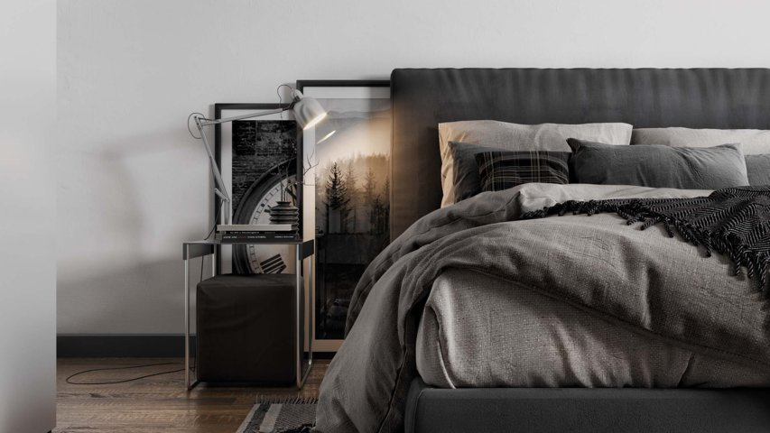

Ещё совсем недавно, показать свой товар красиво, было возможно лишь двумя способами – видео съёмка и фото. Для этого приходилось перевозить громоздкую мебель в фотостудии, после чего терялся товарный вид. Сейчас же ситуация кардинально изменилась и 3D визуализация мебели практически вытеснила фотографию. Благодаря современным технологиям, появлась возможность создать мебельный каталог меньше чем за месяц, фабрике даже не надо будет иметь всю мебель в наличии. Визуализация позволяет заказчику получить фотореалистичные рендеры экстерьера и интерьера, а также отобразить выбранную атмосферу и концепцию. Компьютерные программы дают возможность передать не только размер мебели и её конфигурацию, но также более мелкие и крупные детали, расположенные на её поверхности. В программную базу уже загружены текстуры облицовочных и отделочных материалов и декоры, что позволяет накладывать изображения на детали и фасады корпусов. После этого специалисты добавляют преломления света и различные отражения на поверхность, делая картину более реалистичной и эффектной. Имея готовую базовую модель, есть возможность представлять мебель в различных цветовых решениях и размерах, что довольно удобно для дальнейшего комбинирования и изменения. Также можно демонстрировать механизмы трансформации мебели непосредственно в динамике, что на видео съёмке смотрелось не очень презентабельно. Если у заказчика есть в наличие качественные фото мебели их можно совместить с 3D интерьером – наиболее популярная услуга и ничуть не уступающая настоящей фотографии.

Типы 3-х мерного представления
Создать 3-х мерную картинку разрабатываемого объекта можно несколькими способами. Стоимость такой услуги зависит от сложности самого проекта, выполняемых работ и качества используемого ПО. К первым видам объёмного проектирования относят схематическое изображение на листе бумаги. Таким способом пользуются дизайнеры при первом общении с клиентом, когда проводится начальное обсуждение всего проекта. Практичным и распространённым способом визуализации дизайн-проекта стало использование 3d графических программ. Опытные модельеры быстро выполняют даже сложные задания с точным перенесением размеров и положений всех объектов. Для такой работы (рендеринга) обычно выбирается один или несколько ракурсов. В панорамном исполнении применяется эффект камеры с поворотом в 360°. На мониторе отображается камера, поворачивая которую можно «заглянуть за угол».
Преимущества 3D визуализации мебели
Современные технологии позволяют оперативно вносить изменения в будущий проект: при необходимости изменить ракурс, подобрать оптимальный вид, более выгодный цвет и многое другое, что даёт максимальный результат. Только 3D визуализация мебели и интерьера позволяют создать эффект присутствия. Таким образом, потенциальный клиент сможет оценить параметры интерьера помещения, будущего архитектурного сооружения, его внешний вид и при необходимости откорректировать неточности до воплощения задуманного в реальность. Как результат, мы получаем объёмный ролик или картинку, которые по сравнению с чертежами, может разобрать любой человек, даже не имеющий отношения к моделированию объектов, архитектуре и дизайну интерьеров. Представленные технологии значительно экономят как деньги, так и время, ведь даже серьёзную неточность или просчёт можно легко исправить на этапе визуализации.